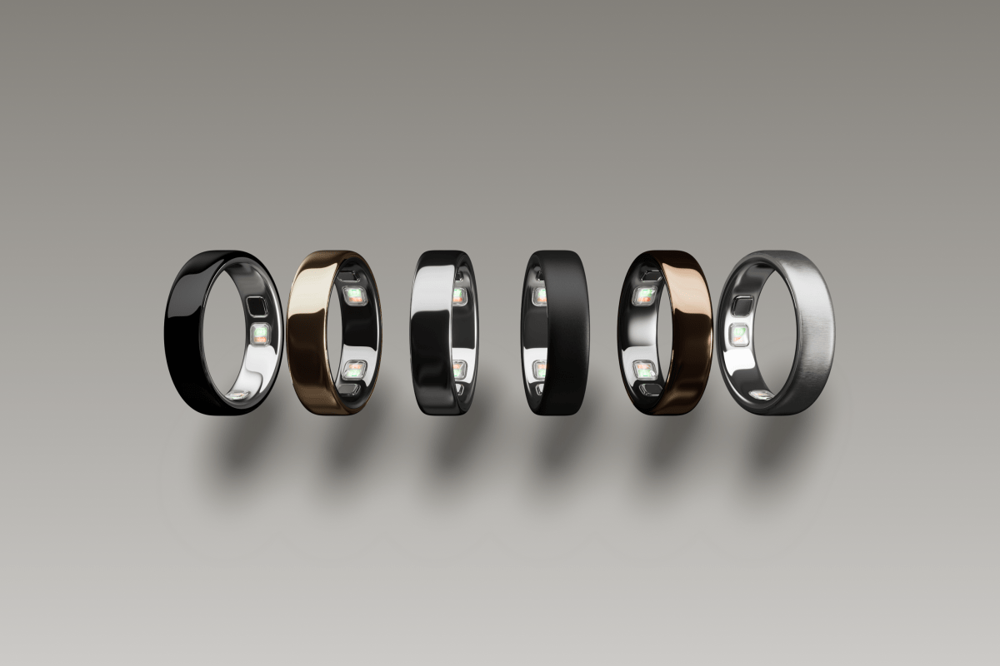
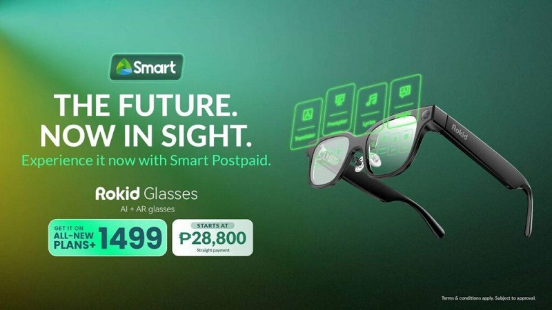
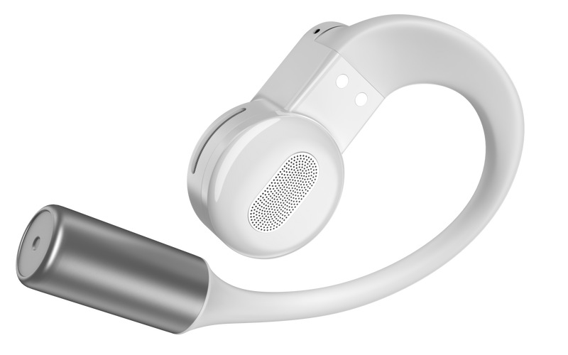

讯飞 AI 眼镜
科大讯飞在澳门 BEYOND Expo 2026 正式发布并公布商业化信息。核心卖点是多语种实时翻译、GlassClaw 智能助理、会议与办公工作流、智能提词和轻量化佩戴。
- 重量约 40g，镁铝合金框架、树脂波导显示方案。
- 支持 122 种语言、口音与方言的翻译场景。
- 定价 4,299 元，计划 2026-06-15 开启预售。
- 面向商务旅行、会议、演讲、跨语言沟通等高频个人生产力场景。
AI硬件完成品日报
这一类是今天最集中的方向：AI眼镜继续加速商业化，智能戒指和音频穿戴也在把AI从“功能点”变成产品叙事的一部分。
科大讯飞在澳门 BEYOND Expo 2026 正式发布并公布商业化信息。核心卖点是多语种实时翻译、GlassClaw 智能助理、会议与办公工作流、智能提词和轻量化佩戴。

Oura 发布第五代智能戒指，主打更小机身、更准确传感和健康AI服务。它不是单纯新外壳，软件层同步加入健康风险提示和AI辅助医疗入口。

菲律宾运营商 Smart 将 Rokid AI Glasses 纳入后付费合约，2026-05-29 起开放。它属于区域商业化/渠道开售，而不是全球首发新品。

Noise 发布 ALT 个人技术系列，包含 ALT Watch 1、ALT Buds Open、ALT Clip、ALT Buds 和 ALT Buds (S)。本项的AI属性弱于AI眼镜，但官方和媒体均把AI功能列入产品能力。
| 候选 | 判断 | 原因 |
|---|---|---|
| Dreame X60 Pro / Cyber X | 不纳入本轮主表 | 完成品家用硬件，但官方发布是 2026-05-27 10:00 GMT，早于 2026-05-28 13:01 CST 的窗口起点。 |
| Retronix Sparrow Hawk | 排除 | 边缘AI计算平台，面向机器人/制造/开发部署，不是最终用户完成品。 |
| Warby Parker Intelligent Eyewear | 观察 | 5月28日披露首款智能镜框，但计划今年秋季上市，缺少当前销售/预售节点。 |
| Wetour Orchestra | 排除 | Physical AI 操作系统和协议层发布，不是独立最终用户硬件。 |
| Mavis Viaro / Itero | 排除 | 5月28日有媒体报道，但可追溯的官方发布节点在4月，非本轮窗口新品。 |
| 方向 | 结论 |
|---|---|
| AI眼镜 | 仍是最密集的端侧AI硬件赛道。发布从“硬件参数”转向翻译、会议、任务代理和渠道捆绑。 |
| 健康穿戴 | Oura Ring 5 显示智能戒指正在从指标记录转向早期风险提示和AI辅助护理。 |
| 家庭机器人 | 新闻热度高，但本时间窗内足够严格的“完成品新品发布/开售”证据不足。 |
| 企业硬件 | 多数是边缘计算平台、系统层或软件平台，按本自动化口径应剔除。 |